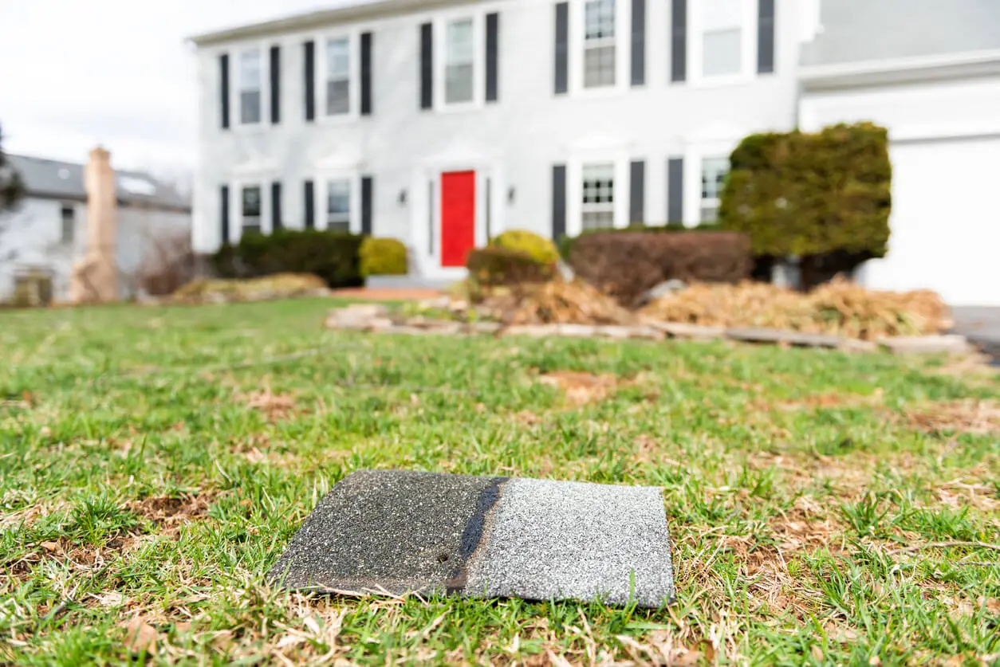

If you’ve ever experienced a windstorm, you’ll understand that this invisible force is not one to be reckoned with. Toppled trees, downed electrical wires, and overturned trucks are just some of the after-effects left by heavy gusts of wind. Another is damaged shingle roofs. Whether you see a broken branch or a blown-off shingle, you’ll need to inspect for signs of wind damage to your roof to know if professional evaluation and repair are necessary.
How Much Wind a Shingled Roof Can Withstand
Beginning at only a wind speed of 45 mph, slight damage to a shingle roof may take place (the removal of loose shingles). Turn up the dial on that wind speed to 75+ mph, and you can expect to see widespread, catastrophic damage to shingle roofs.
While the wind itself can blow shingles and flashing away, significant roof damage often occurs when a falling branch or tree hits the roof on its way down.
Possible Signs of Wind Damage to a Roof

Some possible signs of wind damage to a roof include:
- Debris on the roof (tree limbs, a pile of leaves, etc.).
- Missing, loose, or curling shingles. This is most often the case along the roof’s edges, corners, and flashing.
- Lifted, cracked, buckled, or separated flashing, especially around the chimney.
- Dented, loose, or fallen rain gutters.
- Missing shingle granules, or granules collected in the rain gutters.
- Leaky roof. Check your top-floor ceilings or attic.
How to Identify Roof Wind Damage
We recommend calling a professional roofer to identify roof wind damage, especially after a big storm. However, you can do some simple investigating on your own. Do this regularly to ensure your home stays properly protected from future wind and rainstorms.
From your windows, look over your roof. You can also ask your neighbors to look at your roof from their windows. Next, walk around the perimeter of your home to check the roof’s edges. If it is safe to do so (no fallen trees or wires), stand at the top of a ladder and take a closer look. (We don’t recommend getting up on your roof due to the dangers of falling.)
Then go inside and check the home’s attic or top floor ceiling and look for any signs of a water leak. This can be dripping or pooled water, bulging sheetrock, mold, or yellow/brown stains. And be sure to take a lot of notes and pictures along the way!
If you do see any noticeable wind damage, it’s a good idea to call your homeowners insurance provider to talk about what repair costs will be covered if you file a roof insurance claim.
Before we go over American Roofing’s wind damage roof inspection guide, let’s first get the facts about wind in Utah.
Why Utah Is So Windy
Here are a couple of interesting statistics about wind in Utah:
- The state of Utah ranks #17 for average wind speed in the United States.
- The average wind speed is over 18 mph.
- Wind gusts higher than 25 mph are experienced on 25-70% of days each month.
- Utah has five wind farms across the state.
- Wind energy produced 18% of Utah’s renewable electricity in 2018.
Utah is so windy because the state’s geography produces four main types of wind, sometimes at the same time in a single location! That’s due to the low Salt Lake Valley sitting in between very high mountains on two sides.
The types of wind common to Utah include:
- Northerly Winds that come with the passing of a strong cold front or low-pressure system.
- Southerly Winds or “desert winds” because they bring warm air from the southwest to the north before a storm or cold front.
- Easterly Canyon Winds happen when strong high pressure from Wyoming and deep low pressure from Nevada force strong gusts out of the Wasatch Mountain canyons and into the valleys below.
- Westerly Winds are when moist air from the west coast moves toward Utah but is cut off from the Oquirrh Mountains. The mountains force the air to rise, which cools down the air and causes wind shear (a rapid change in winds over a short distance).
All this wind means that wind damage to a roof is common in Utah, so regular roof inspection should definitely be part of your home maintenance routine.
Case In Point: The Salt Lake and Davis County Windstorm of September 2020
Tuesday, September 8, 2020, was a historic day for Utah. On that day, hurricane-force winds blew in and wreaked havoc across Salt Lake and Davis counties, taking down hundreds of 100-year-old trees and knocking out power for 180,000 residents. On top of all this, thousands of homes apartments, and other residences also suffered wind damage to their roof.
While costs of damages for this storm are still being calculated, a similar Utah windstorm in 2011 ended up totaling over $20 million.
When to Call a Roofing Professional for Further Inspection
You’ll know it’s time to call a roofing professional to inspect for wind damage if:
- You are unable to carry out an inspection safely due to a lack of time, physical limitations, or a sturdy ladder.
- From the ground, damage appears to be substantial or severe.
- There are tree limbs (or an entire tree), electrical wires, or other debris on or around the roof.
- You see signs of water leaks or water damage inside your home.
- Your homeowners insurance policy or provider suggests you do.
If you suspect that you’ve suffered wind damage to your roof, use these tips to do an inspection, or contact American Roofing for help!